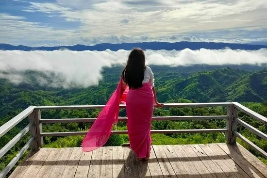
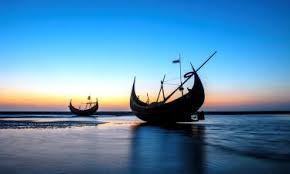

Bangladesh's tourist attractions include historical monuments, resorts, beaches, picnic spots, forests and tribal people, wildlife of various species. Activities for tourists include angling, water skiing, river cruising, hiking, rowing, yachting, and sea bathing ...Wikipedia
You can search for more information about Bangladesh...
Personal Travel Blogs & Travel Stories
"These are all of my personal travel blogs & stories at An Adventurous World"
Let's go ...
Every now and then I like to get a little sentimental and write a really personal blog about myself.
Anyway, my name is Shakil Ahamed. Now I am post-graduate by BSC in CSE in Dhaka International University. My dream is to be a WEB DEVELOPER. And one day, Insha-Allah I will succeed.
These personal travel blogs are usually about me, my plans, my thoughts, my feelings. Anything and everything that’s going on in my mind. I really want to inspire you to do something different on your travels, to see the world in a different light – hopefully after reading a few of these personal travel blogs it’ll give you the desire to do something new and exciting.
My favourite destination ...
In Bangladesh:

Sajek Valley is the most beautiful place in Bangladesh. It is known as a 'Megher Rajjo'. Sajek Tripuri Valley is one of the most popular tourist spots in Bangladesh situated among the hills of the Kasalong range of mountains in Sajek union, Baghaichhari Upazila in Rangamati District.[3] The valley is 2,000 feet (610 m) above sea level.[4] Sajek Tripuri Valley is known as the Queen of Hills & Roof of Rangamati. Bistarito ar akdin bolbo ...

Cox's Bazar is the largest sea beach in the world. Everyone has a fascination for visiting Cox's Bazar. I had never seen the sea before. Therefore, I had much curiosity to see the sea. Last autumn vacation, I with some of my friends went to Cox's Bazar. We went there from Dhaka by a hired bus.We reached there in the afternoon. We put up in a hotel near the sea beach. In the next morning, we got up from bed early and went to the sea beach. We enjoyed the sunrise. We were amazed at seeing the frequent change of color of the sea. Many tourists were walking here and there. Some of them were bathing in the sea. Some of us also took bath in the sea. We enjoyed the sun set scene. Really, that was a wonderful scene. All these, visiting Cox's Bazar is memorable incident in my life.